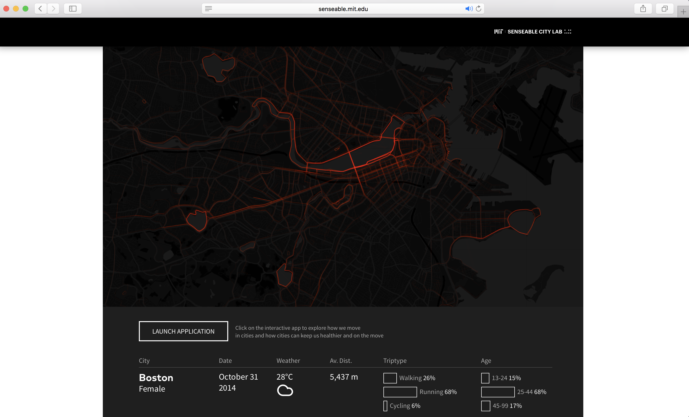
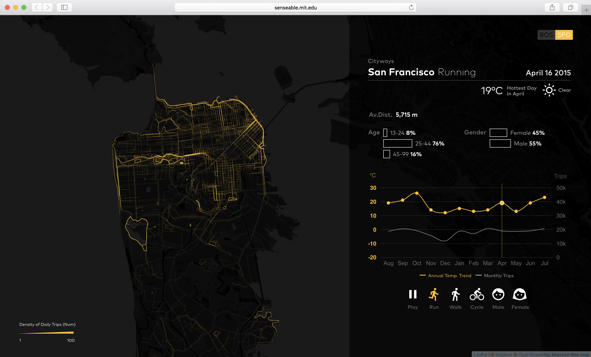
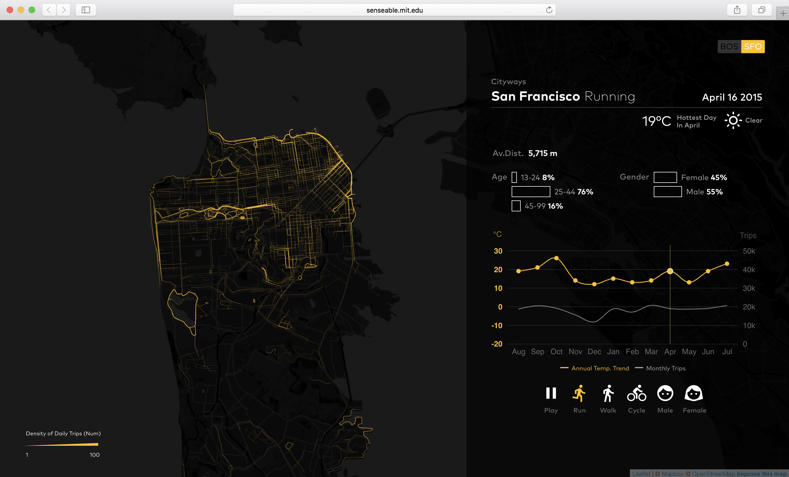
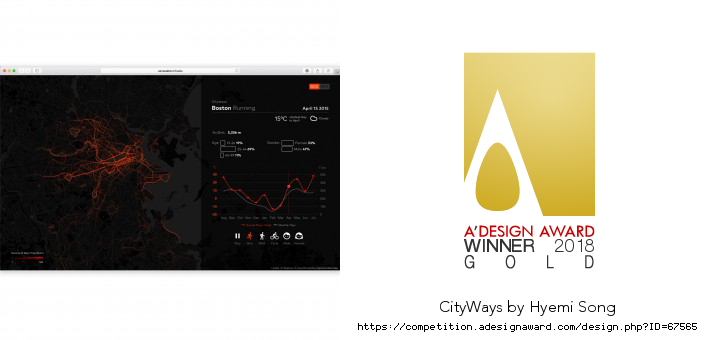
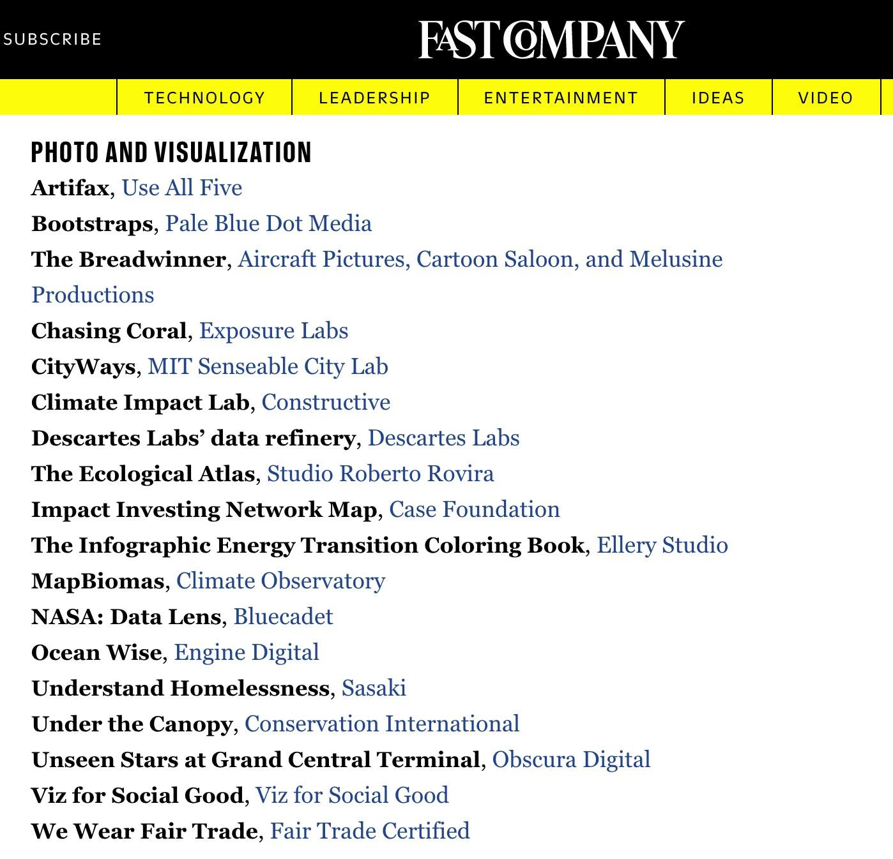
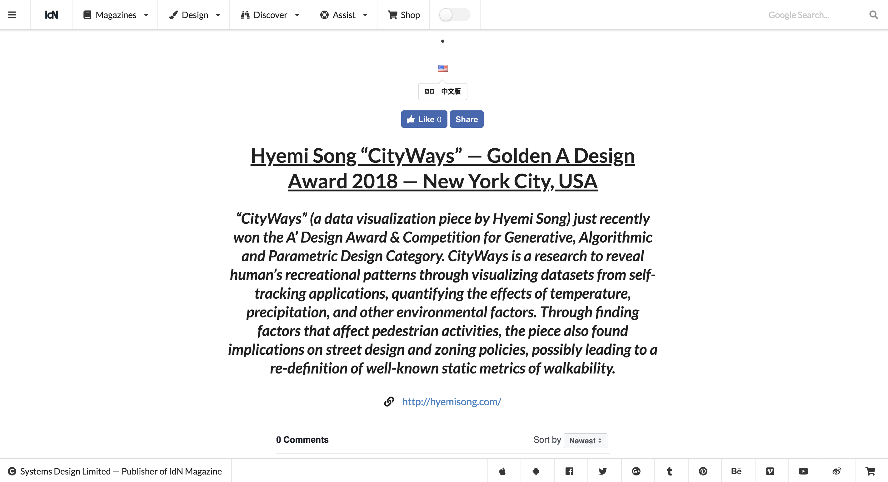
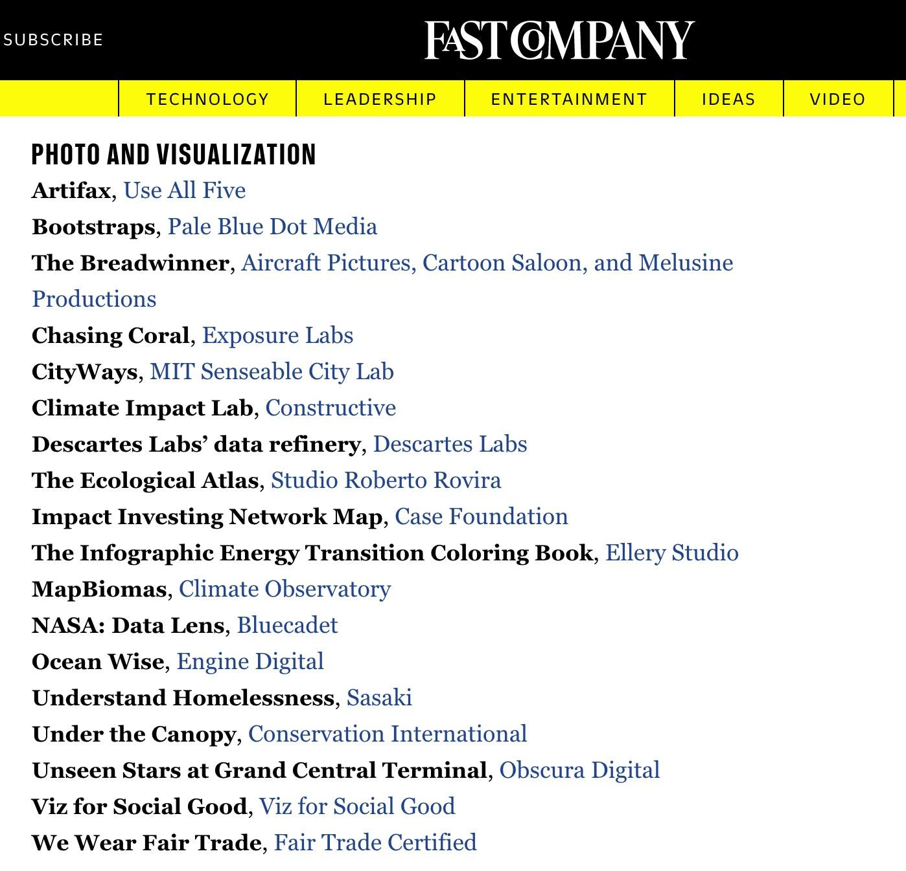
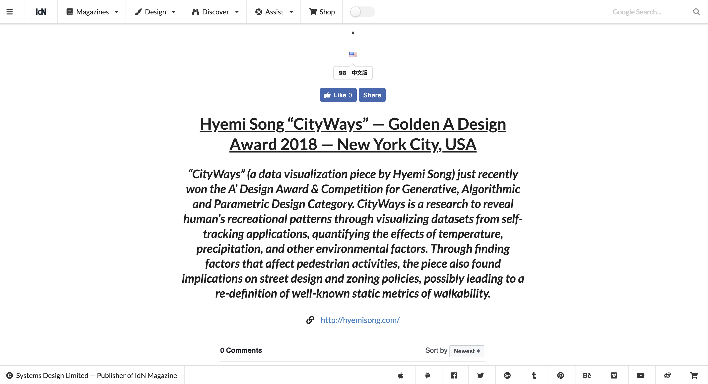

City Ways
-
CityWays is a research to reveal human’s recreational patterns through visualizing datasets from self-tracking applications, quantifying the effects of temperature, precipitation, and other environmental factors. Through finding factors that affect pedestrian activities, the piece also found implications on street design and zoning policies, possibly leading to a re-definition of well-known static metrics of walkability.
-
*** Gold, 2018 A'Design Award and Competition*** Finalist, 2018 World Changing Ideas Awards (Fast Company)*** Data Vis Today, Episode 13*** 2018 Kantar Information is Beautiful Awards (Long list)Type
ToolsCommercial at MIT Senseable City Lab
d3.js, Mapbox, HTML, CSS, Javascript-
Description
-
Walkability in a city, Data from Self-Tracking Applications
-
We explore the cities of San Francisco and Boston using billions of data points collected via activity monitoring apps. Tens of millions of self-tracking applications are used by people eager to monitor how many calories they consume, how many hours they sleep, how many steps they take.
By analyzing such data, we can start to understand the factors that influence outdoor human activity—such as weather, urban morphology, topography, traffic, the presence of green areas, etc.
-
Screenshots
 

-
Publications
 





-